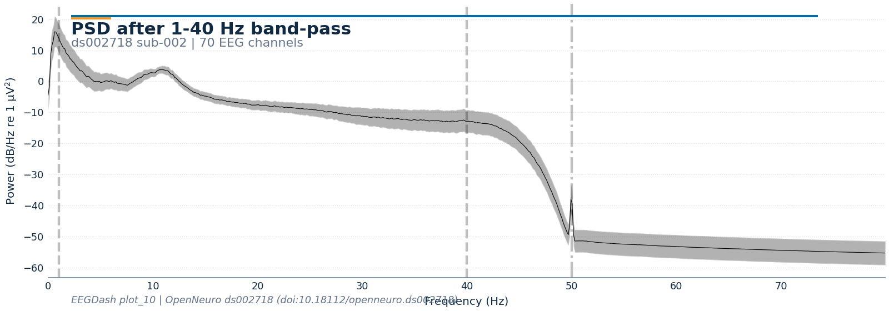
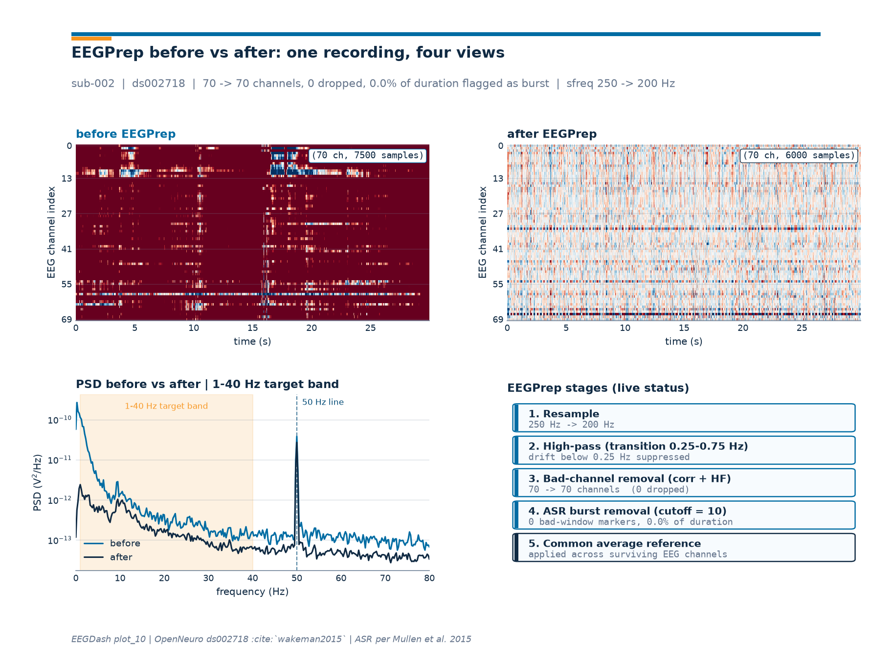

Note
Go to the end to download the full example code or to run this example in your browser via Binder.
Preprocess EEG and create windows#
Difficulty 1-2 | Runtime: 2m | Compute: CPU
Raw EEG is rarely model-ready: wrong sampling rate, drift and line noise,
no fixed reference, sporadic large-amplitude bursts, a continuous
timeline instead of fixed epochs. This tutorial walks the canonical
EEGDash preprocessing recipe on one recording from
OpenNeuro ds002718 (Wakeman & Henson
2015), reachable through NEMAR (Delorme et al.
2022). Every choice is named (Cisotto & Chicco 2024 Tips 4-5), inspected
on the array, and the recipe ends with a windowed dataset the next four
core-workflow tutorials reuse. The closing diagnostic figure compares
the recording before and after a one-call
braindecode.preprocessing.EEGPrep pass that wraps ASR (Mullen
et al. 2015), bad-channel detection, high-pass, and CAR.
Keywords: preprocessing, windowing, ASR
Learning objectives#
Describe the preprocessing pipeline as a sequence of array transforms with one purpose per step.
Identify the methods
mne.io.Rawexposes and the helpers inmne.preprocessing.Set montage, reference, filter, and resample with named, reportable parameters using
braindecode.preprocessing.Preprocessor.Convert continuous data into fixed-length windows of shape
(n_channels, window_samples)withbraindecode.preprocessing.create_fixed_length_windows().Apply
braindecode.preprocessing.EEGPrep(an ASR-based one-call pipeline, Mullen et al. 2015) and inspect what it changed on a 4-panel diagnostic figure.
Requirements#
About 3 min on CPU on first run; under 60 s once cached.
Network on first call (~80 MB into
cache_dir); offline thereafter.Prerequisite:
plot_01_first_recording.Concept: Preprocessing decisions.
Setup. Preprocessing is deterministic given the parameters, so no seed.
import matplotlib.pyplot as plt
import mne
import pandas as pd
import eegdash
from braindecode.preprocessing import (
EEGPrep,
Preprocessor,
create_fixed_length_windows,
preprocess,
)
from eegdash import EEGDashDataset
from eegdash.paths import get_default_cache_dir
from eegdash.viz import style_figure, use_eegdash_style
mne.viz.set_browser_backend("matplotlib")
mne.set_log_level("WARNING")
use_eegdash_style()
CACHE_DIR = get_default_cache_dir()
TARGET_SFREQ = 200.0 # Hz, see Step 5 (200 Hz keeps ASR's preferred rate)
WINDOW_SIZE_S = 2.0 # seconds, see Step 6
L_FREQ, H_FREQ = 1.0, 40.0 # band-pass edges in Hz
EEGPREP_SLICE_S = 30.0 # 30 s slice rendered in the diagnostic panel
print(f"eegdash {eegdash.__version__}; cache_dir={CACHE_DIR}")
eegdash 0.7.2; cache_dir=/home/runner/eegdash_cache
Concepts behind preprocessing#
Three ideas are worth keeping in mind before any code runs:
Order is not commutative. A montage assigns 3D positions to channels; an average reference is computed across those channels, so the montage has to be in place first. Filtering changes amplitudes channel-by-channel, so it commutes with the reference but should run before resampling (otherwise the new Nyquist could clip pass-band edges). Windowing comes last; once the data is cut into fixed-length frames the continuous timeline is gone.
Named choices. Cisotto & Chicco (2024) Tip 4 asks for the filter type, pass-band, phase, and design in the methods section. Tip 5 asks for the reference. Each
Preprocessorbelow carries those parameters explicitly, so a reader can reproduce the recipe from this script alone.Two surfaces.
mne.io.Rawmutates one recording in place;preprocess()runs the same list across every recording in anEEGDashDatasetso the metadata stays attached. We use both:rawfor inspection,preprocessfor the pipeline.
Evidence on what helps and what hurts#
Before stacking five more correction stages on the recipe below, look at two papers that ran the controlled experiment first.
Kessler et al. (2025), Communications Biology, varied filtering, referencing, baseline, detrending, and four artefact-correction stages across seven ERP CORE experiments (40 participants) and decoded with EEGNet and time-resolved logistic regression. Every artefact-correction step reduced decoding performance across both models; higher high-pass cutoffs consistently raised it. Baseline correction helped EEGNet; lower low-pass cutoffs and linear detrending helped time-resolved decoders. The authors caution that uncorrected artefacts can lift accuracy at the cost of interpretability: the model may learn structured noise instead of the neural signal.
Delorme (2023), Scientific Reports, measured the share of significant channels in a 100 ms post-stimulus window across three public collections and compared optimised pipelines from EEGLAB, FieldTrip, MNE, and Brainstorm. Only one configuration beat plain high-pass filtering. Referencing and advanced baseline removal were significantly detrimental; rejecting bad segments did not recover the lost statistical power; automated ICA rejection of eye and muscle components failed to reliably help.
Practical reading. Keep the recipe short. Tune the high-pass cutoff rather than stacking automatic artefact-correction stages. Reach for ICA or ASR (Mullen et al. 2015; Kothe & Makeig 2013) only after a measurement protocol can show they help on your downstream task. The five steps below are the floor, not the ceiling.
What can a Raw object do?#
Before applying anything, list the methods mne.io.Raw
exposes so the recipe stops feeling magical. Most of the verbs here
are reused below.
raw_methods = sorted(
name
for name in dir(mne.io.BaseRaw)
if not name.startswith("_") and callable(getattr(mne.io.BaseRaw, name, None))
)
pd.DataFrame({"method": raw_methods}).head(25)
What’s in mne.preprocessing?#
Beyond the in-place raw.* methods, MNE exposes a richer toolbox
for artefact handling: ICA for
blind-source separation, EOGRegression
for eye-blink regression, peak finders for EOG/ECG, projector
helpers, and so on. The braindecode.preprocessing.EEGPrep
pass at the end of this tutorial sits next to these as a one-call
alternative when ASR-style cleanup is needed.
prep_attrs = sorted(
name for name in dir(mne.preprocessing) if not name.startswith("_")
)[:25]
pd.DataFrame({"mne.preprocessing": prep_attrs})
Step 1: Load one recording (lazy)#
Same idiom as plot_01: build the dataset, index in,
record.raw triggers the download and opens the file with MNE.
[05/09/26 20:24:39] WARNING File not found on S3, skipping: downloader.py:163
s3://openneuro.org/ds002718/sub-0
02/eeg/sub-002_task-FaceRecogniti
on_eeg.fdt
Predict. What is the shape of raw.get_data() for this
recording? Channels-by-samples, with samples = sfreq * duration.
Write a guess down before peeking.
data_in = raw.get_data()
pd.DataFrame(
{
"value": [
f"{data_in.shape}",
str(data_in.dtype),
f"{raw.info['sfreq']:.1f}",
f"{raw.info['nchan']}",
f"{raw.times[-1]:.1f}",
]
},
index=["raw.get_data().shape", "dtype", "sfreq (Hz)", "n_channels", "duration (s)"],
)
Step 2: Set the montage#
A montage tells MNE where each electrode sits in 3D. We attach the
10-20 standard positions; on_missing="ignore" leaves non-EEG
sensors (EOG, ref) untouched.
raw.set_montage("standard_1020", on_missing="ignore")
montage = raw.get_montage()
n_pos = len(montage.ch_names) if montage is not None else 0
print(f"montage attached: standard_1020 ({n_pos} channel positions)")
montage attached: standard_1020 (70 channel positions)
Step 3: Set an average reference#
Every voltage in EEG is a difference; the choice of reference
shifts every sample. The common-average reference subtracts the
per-sample mean across channels, a defensible default for
whole-head montages (Cisotto & Chicco 2024 Tip 5).
projection=False applies it immediately rather than as a lazy
projector.
raw.set_eeg_reference("average", projection=False)
print(f"custom_ref_applied={raw.info['custom_ref_applied']}")
custom_ref_applied=1 (FIFFV_MNE_CUSTOM_REF_ON)
Step 4: Band-pass filter (1-40 Hz, FIR, zero-phase)#
Run. A non-causal FIR filter with the Hamming-windowed
firwin design is MNE’s reproducible default. Pass-band 1-40 Hz
removes drift below 1 Hz and attenuates line noise above 40 Hz; the
stop-band edges are derived from the transition bandwidth.
The 1 Hz high-pass is not arbitrary. Both Kessler et al. (2025) and
Delorme (2023) report that raising the high-pass cutoff is the
single preprocessing choice with the most consistent positive effect
on downstream task performance. If you have headroom in your time
domain, try L_FREQ=0.5 and L_FREQ=1.5 and compare.
highpass=1.00 Hz, lowpass=40.00 Hz
Investigate. Plot the PSD: drift below 1 Hz and the high-frequency tail are gone; the alpha bump near 10 Hz survives.
psd = raw.copy().pick("eeg").compute_psd(fmax=80.0, verbose=False)
fig_psd = psd.plot(picks="eeg", average=True, show=False)
style_figure(
fig_psd,
title="PSD after 1-40 Hz band-pass",
subtitle=(
f"{DATASET} sub-{SUBJECT} | {len(raw.copy().pick('eeg').ch_names)} EEG channels"
),
source=(f"EEGDash plot_10 | OpenNeuro {DATASET} (doi:10.18112/openneuro.ds002718)"),
)
plt.show()

/home/runner/work/EEGDash/EEGDash/eegdash/viz/identity.py:178: UserWarning: This figure was using a layout engine that is incompatible with subplots_adjust and/or tight_layout; not calling subplots_adjust.
fig.subplots_adjust(top=0.84, bottom=0.18, left=0.12, right=0.95)
Step 5: Resample to 200 Hz#
The original sampling rate is far above what 1-40 Hz content needs.
200 Hz keeps comfortable headroom above Nyquist (100 Hz), shrinks
memory by a factor of original_sfreq / 200, and stays inside
the set of rates ASR is calibrated for (100, 128, 200, 250, 256,
300, 500, 512 Hz). We reuse this rate in the EEGPrep pass below.
sfreq_before = raw.info["sfreq"]
raw.resample(TARGET_SFREQ, verbose=False)
print(f"sfreq: {sfreq_before:.1f} Hz -> {raw.info['sfreq']:.1f} Hz")
print(f"raw.get_data().shape -> {raw.get_data().shape}")
sfreq: 250.0 Hz -> 200.0 Hz
raw.get_data().shape -> (74, 598200)
Step 6: Apply the same recipe to the dataset (and create windows)#
Run. The four Preprocessor
steps replay against the dataset (so braindecode’s wrapper carries
metadata across recordings). Then
create_fixed_length_windows() cuts
400-sample windows (WINDOW_SIZE_S * TARGET_SFREQ) with stride
equal to the window size for 0% overlap.
WINDOW_SAMPLES = int(WINDOW_SIZE_S * TARGET_SFREQ)
preprocess(
dataset,
[
Preprocessor("set_montage", montage="standard_1020", on_missing="ignore"),
Preprocessor("set_eeg_reference", ref_channels="average"),
Preprocessor(
"filter",
l_freq=L_FREQ,
h_freq=H_FREQ,
method="fir",
fir_design="firwin",
),
Preprocessor("resample", sfreq=TARGET_SFREQ),
],
)
windows = create_fixed_length_windows(
dataset,
window_size_samples=WINDOW_SAMPLES,
window_stride_samples=WINDOW_SAMPLES,
drop_last_window=True,
)
x0, _, _ = windows[0]
pd.DataFrame(
{
"value": [
len(windows),
f"{x0.shape}",
str(x0.dtype),
int(TARGET_SFREQ),
WINDOW_SAMPLES,
]
},
index=["n_windows", "windows[0][0].shape", "dtype", "sfreq (Hz)", "window_samples"],
)
/home/runner/work/EEGDash/EEGDash/.venv/lib/python3.12/site-packages/braindecode/preprocessing/preprocess.py:78: UserWarning: apply_on_array can only be True if fn is a callable function. Automatically correcting to apply_on_array=False.
warn(
Investigate. windows[0][0] is a
(n_channels, window_samples) numpy.ndarray; each window
also carries metadata columns (i_start_in_trial, target,
…) the next tutorial uses for subject-aware splits.
Step 7: One-call cleanup with EEGPrep#
When the recipe grows past one named pass (line-noise removal,
channel rejection, artefact subspace reconstruction, ICA),
braindecode ships a single Preprocessor
that wraps the EEGLAB clean_rawdata pipeline:
EEGPrep. The class chains DC
offset removal, optional resampling, flatline-channel rejection, a
high-pass with a configurable transition band, correlation-based bad
channel detection, ASR burst removal (Mullen et al. 2015; Kothe &
Makeig 2013), bad-window rejection, optional reinterpolation, and
optional CAR.
Run. Reload one recording, cap it at 30 s for tutorial runtime,
and apply EEGPrep with the
defaults that match the recommendations in the class docstring (ASR
cutoff 10, correlation threshold 0.8, transition band 0.25-0.75 Hz).
The same call works as a Preprocessor
inside preprocess(); we keep it
direct here so the before/after diagnostic has a clean Raw to
show.
record_pp = EEGDashDataset(
cache_dir=CACHE_DIR, dataset=DATASET, subject=SUBJECT, task=TASK
).datasets[0]
raw_full = record_pp.raw.load_data().copy()
raw_full.set_montage("standard_1020", on_missing="ignore")
raw_pp = raw_full.copy().crop(0.0, min(EEGPREP_SLICE_S, raw_full.times[-1]))
raw_before = raw_pp.copy().pick("eeg")
eegprep = EEGPrep(
resample_to=TARGET_SFREQ,
highpass_frequencies=(0.25, 0.75),
bad_channel_corr_threshold=0.8,
burst_removal_cutoff=10.0,
bad_window_max_bad_channels=0.25,
bad_channel_reinterpolate=False,
common_avg_ref=True,
)
eegprep.fn(raw_pp) # in-place; mutates raw_pp
raw_after = raw_pp
n_dropped = len(raw_before.ch_names) - len(raw_after.copy().pick("eeg").ch_names)
n_bad_annot = sum(1 for a in raw_after.annotations if "BAD" in a["description"].upper())
pd.DataFrame(
{
"value": [
len(raw_before.ch_names),
len(raw_after.copy().pick("eeg").ch_names),
n_dropped,
n_bad_annot,
f"{raw_after.info['sfreq']:.1f}",
]
},
index=[
"n_channels (before)",
"n_channels (after)",
"n_channels dropped",
"n bad-window annotations",
"sfreq (Hz, after)",
],
)
[05/09/26 20:24:56] WARNING File not found on S3, skipping: downloader.py:163
s3://openneuro.org/ds002718/sub-0
02/eeg/sub-002_task-FaceRecogniti
on_eeg.fdt
/tmp/tmpnfxwkh3i.set
Field 'subject' is missing from the EEG dictionnary, adding it.
Field 'group' is missing from the EEG dictionnary, adding it.
Field 'condition' is missing from the EEG dictionnary, adding it.
Field 'session' is missing from the EEG dictionnary, adding it.
Field 'comments' is missing from the EEG dictionnary, adding it.
Field 'times' is missing from the EEG dictionnary, adding it.
Field 'icaact' is missing from the EEG dictionnary, adding it.
Field 'icachansind' is missing from the EEG dictionnary, adding it.
Field 'urchanlocs' is missing from the EEG dictionnary, adding it.
Field 'urevent' is missing from the EEG dictionnary, adding it.
Field 'eventdescription' is missing from the EEG dictionnary, adding it.
Field 'epoch' is missing from the EEG dictionnary, adding it.
Field 'epochdescription' is missing from the EEG dictionnary, adding it.
Field 'stats' is missing from the EEG dictionnary, adding it.
Field 'specdata' is missing from the EEG dictionnary, adding it.
Field 'specicaact' is missing from the EEG dictionnary, adding it.
Field 'splinefile' is missing from the EEG dictionnary, adding it.
Field 'icasplinefile' is missing from the EEG dictionnary, adding it.
Field 'dipfit' is missing from the EEG dictionnary, adding it.
Field 'history' is missing from the EEG dictionnary, adding it.
Field 'saved' is missing from the EEG dictionnary, adding it.
Field 'etc' is missing from the EEG dictionnary, adding it.
Field 'datfile' is missing from the EEG dictionnary, adding it.
Field 'run' is missing from the EEG dictionnary, adding it.
Field 'roi' is missing from the EEG dictionnary, adding it.
[05/09/26 20:24:58] INFO Detecting flat line clean_artifacts.py:182
channels...
INFO Applying high‑pass filter... clean_artifacts.py:191
INFO Scanning for bad channels... clean_channels.py:79
WARNING clean_channels failed (To clean_artifacts.py:216
use this function most of
your channels should have
X,Y,Z location
measurements.); falling back
to clean_channels_nolocs.
INFO Applying ASR burst repair... clean_artifacts.py:232
INFO Finding a clean section of the clean_asr.py:102
data for calibration...
INFO Determining time window clean_windows.py:115
rejection thresholds...
[05/09/26 20:25:00] INFO done. clean_windows.py:147
INFO Keeping 36.9% (11 seconds) of clean_windows.py:179
the data.
ERROR Could not select time windows clean_windows.py:204
using EEGLAB's pop_select();
details: Error setting single
item of array.
INFO Falling back to a basic clean_windows.py:207
substitute and dropping signal
meta-data.
INFO Estimating ASR calibration clean_asr.py:138
statistics...
INFO Calculating blockwise covariances... asr.py:167
INFO Calculating robust geometric median asr.py:207
covariance...
INFO Determining per-component thresholds... asr.py:227
[05/09/26 20:25:03] INFO Thresholds calculation complete. asr.py:289
INFO Applying ASR processing... clean_asr.py:177
INFO Cleaning data in 32 blocks asr.py:427
INFO Finished cleaning. asr.py:546
INFO ASR cleaning finished. clean_asr.py:195
INFO Final post‑processing – clean_artifacts.py:296
removing irrecoverable
windows...
INFO Determining time window clean_windows.py:115
rejection thresholds...
[05/09/26 20:25:05] INFO done. clean_windows.py:147
INFO Keeping 100.0% (30 seconds) of clean_windows.py:179
the data.
ERROR Could not select time windows clean_windows.py:204
using EEGLAB's pop_select();
details: Error setting single
item of array.
INFO Falling back to a basic clean_windows.py:207
substitute and dropping signal
meta-data.
INFO Use vis_artifacts to compare clean_artifacts.py:303
the cleaned data to the
original.
ERROR Could not add back eegprep_preprocess.py:231
non-EEG channels (EEG061,
EEG062, EEG063, EEG064)
after EEGPrep processing;
these will be omitted
from the processed data.
If you want to retain
these channels, you will
have to disable resample
and bad time window
removal in the EEGPrep
Preprocessor; you may
perform that step using
other methods before and
after EEGPrep,
respectively.
Step 7b: A four-panel before/after diagnostic#
Investigate. The drawing helpers live in a sibling
_eegprep_diagnostic module so the tutorial cell stays at one
import + one call. The figure shows a 30 s slice of the recording
before EEGPrep (top-left) next to the same slice afterwards
(top-right) at identical color limits, the PSD overlay on the
bottom-left, and a stage-status bar diagram on the bottom-right.
from _eegprep_diagnostic import draw_eegprep_diagnostic # noqa: E402
fig_diag = draw_eegprep_diagnostic(
raw_before=raw_before,
raw_after=raw_after,
sfreq=raw_full.info["sfreq"],
subject=SUBJECT,
dataset=DATASET,
plot_id="plot_10",
slice_seconds=EEGPREP_SLICE_S,
slice_start=0.0,
)
plt.show()

Caveat from the evidence above. Kessler et al. (2025) and Delorme (2023) both report that automated artefact-correction stages frequently degrade downstream metrics. EEGPrep is convenient and opinionated; if you adopt it, measure decoding or ERP significance against a no-correction baseline on a held-out subset before locking the configuration in. The class docstring also flags a within-session leakage caveat: ASR calibration uses statistics from the whole recording, so cross-session protocols are the safer fit.
A common mistake, and how to recover#
Run. Asking for a low-pass cutoff above the Nyquist frequency is
a frequent slip when porting a recipe across recordings with
different sampling rates. MNE catches it with a ValueError; we
trigger it on purpose so the failure mode is visible.
try:
raw.copy().filter(l_freq=L_FREQ, h_freq=raw.info["sfreq"], verbose=False)
except (ValueError, RuntimeError) as exc:
print(f"Caught {type(exc).__name__}: {str(exc)[:120]}")
nyq = raw.info["sfreq"] / 2.0
print(
f"Recovery: keep h_freq < Nyquist ({nyq:.1f} Hz at sfreq={raw.info['sfreq']:.0f} Hz)."
)
Caught ValueError: h_freq ([200.]) must be less than the Nyquist frequency 100.0
Recovery: keep h_freq < Nyquist (100.0 Hz at sfreq=200 Hz).
Modify#
Modify. Re-run Step 4 with L_FREQ, H_FREQ = 1.0, 8.0 to
isolate the delta-theta band. The alpha bump in the PSD should
disappear; explain why in one sentence. Then rerun Step 7 with
burst_removal_cutoff=20.0 and watch the bad-window annotations
shrink as ASR turns more conservative.
Mini-project#
Mini-project. Apply the same seven steps to subject="013"
and confirm the window shape matches. Then swap Step 7 for a
Preprocessor-wrapped EEGPrep
inside preprocess(), so the
whole-cohort pass replays the same configuration across every
recording in the dataset.
Try it yourself#
Set
window_stride_samples = WINDOW_SAMPLES // 2for 50% overlap and note the window count double.Add
mne.preprocessing.ICAafter the filter (15 components,picard) and inspectica.exclude.Save the windows with
braindecode.datasets.WindowsDataset.save()and reload next session without re-running preprocessing (covered in /auto_examples/tutorials/10_core_workflow/plot_13_save_and_reuse_prepared_data).
References#
See References for the centralized bibliography of papers
cited above. Add or amend an entry once in
docs/source/refs.bib; every tutorial inherits the update.
Total running time of the script: (0 minutes 27.573 seconds)